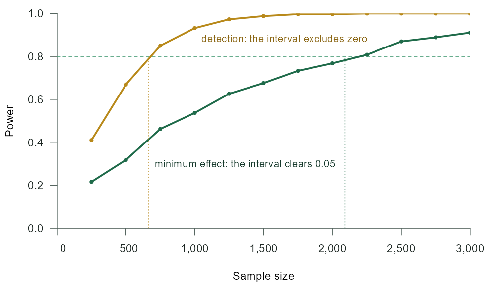

Power analysis when the effect size is an average partial effect or an average interaction effect of a probit or logit model, stated in probability points. An R package and a Stata command.
Get started in R Get started in Stata Workflows
What it does
In a probit or logit model the coefficient is not the quantity anyone interprets. Conclusions are stated in probability points: the program raises firm survival by ten percentage points. That quantity is the average partial effect (APE), and for a moderation question the average interaction effect (AIE). Both depend on all coefficients and on the distribution of the covariates, so power tools that work in coefficient units cannot say how many observations a study needs to find them.
powerape takes the effect in those units. You describe the world on friendly scales (a baseline outcome rate and the share of latent variation the covariates explain), pin the effect you expect, and the package simulates the whole study: it draws the data, fits the model, computes the APE or AIE with a delta-method confidence interval, and checks a claim on that interval.
Why it exists
Powering a study to detect an effect is not the same as powering it to show that the effect is large enough to matter. Following Riesthuis (2024), powerape prices three claims, each read off a confidence interval: that the effect exceeds the smallest effect size of interest (the SESOI; the default), that it differs from zero, or that it is too small to matter. It reports how the simulated studies end, so the share that would detect the effect without being able to call it meaningful is in plain view. Around this sit the tools a design discussion needs: required sample sizes and minimum detectable effects, robustness sweeps over the contextual guesses (Hancock & Feng, 2026), justified error rates (Maier & Lakens, 2022; Wulff & Taylor, 2024), and a citable methods paragraph. The R package and the Stata command implement the same procedure and are documented side by side on this site.
Install
# install.packages("remotes")
remotes::install_github("jespernwulff/powerape")One design question
A support program might raise firm survival, which runs near 30 percent without it, by ten percentage points; it would justify its cost from five points upward. Covariates explain a modest share of the latent variation. How many firms must a study observe to show that the program is worth its cost, and how many to show merely that it does something?
library(powerape)
d <- ape_dgp(focal = pa_var("program", "binary", p = 0.5),
covariates = list(pa_var("z", "normal")),
baseline = 0.30, signal = 0.10)
d <- set_ape(d, target = 0.10)
n_min <- ape_n(d, power = 0.80, claim = "minimum", sesoi = 0.05, nsim = 1000, seed = 502)
n_det <- ape_n(d, power = 0.80, claim = "detect", nsim = 1000, seed = 503)
n_min
#> powerape required sample size -- minimum claim
#> n = 2091 for 80% target power (confirmed 0.808, MCSE 0.006)
#> assumed true APE +0.1000, sesoi 0.050, 90% CI (alpha = 0.05), probit
#> search: 1 step(s); confirmed in 1 round(s) at nsim = 4000.
n_det
#> powerape required sample size -- detect claim
#> n = 663 for 80% target power (confirmed 0.803, MCSE 0.006)
#> assumed true APE +0.1000, sesoi -, 95% CI (alpha = 0.05), probit
#> search: 1 step(s); confirmed in 1 round(s) at nsim = 4000.powerape dgp program, focal(program, binary p(0.5)) covariates((z, normal)) ///
baseline(0.30) signal(0.10)
powerape setape program, target(0.10)
powerape n program, power(0.80) claim(minimum) sesoi(0.05) ///
nsim(1000) seed(502) engine(mata)
powerape n program, power(0.80) claim(detect) ///
nsim(1000) seed(503) engine(mata)powerape required sample size -- minimum claim
n = 2084 for 80% target power (confirmed 0.800, MCSE 0.006)
assumed true APE + 0.1000, sesoi 0.050, 90% CI (alpha = .05), probit
fit: Mata engine (Fisher scoring)
search: 1 step(s); confirmed in 1 round(s) at nsim = 4000.
powerape required sample size -- detect claim
n = 663 for 80% target power (confirmed 0.796, MCSE 0.006)
assumed true APE + 0.1000, sesoi -, 95% CI (alpha = .05), probit
fit: Mata engine (Fisher scoring)
search: 1 step(s); confirmed in 1 round(s) at nsim = 4000.Showing that the program is worth its cost takes about 2,091 firms; showing that it does something takes 663 (Stata: 2,084 and 663; R and Stata draw different random numbers, so the two agree up to simulation error). A study planned for detection would be about a third of the size it needs for the conclusion its authors want to draw. The worked example takes this design all the way through, together with four more: an interaction, a design built from a pilot, a firm-year panel and an instrumented treatment.
What you get
Effects in the units you report. APEs of binary and continuous variables and AIEs, the estimand of ginteff, pinned in probability points; impossible targets are refused with the attainable range.
Three claims, and how studies end. Minimum-effect, detection and equivalence power, with the share of studies that detect without being able to call the effect meaningful.
Sample size, detectable effect, curves. Required n and minimum detectable effects, each confirmed by a high-precision run, and power curves.
Insurance against the guesses. Sweeps over the baseline rate, the covariate signal and design parameters, with the worst case and n_max.
Justified error rates. Alpha as a function of n, or the error-cost optimum, computed from one stored simulation, with a size check.
Real designs. Pilot data or a fitted pilot model, correlated random effects panels, and endogenous treatments by control functions; in Stata, every simulated study can be fitted by probit, logit or cfprobit.

Where to go from here
Start here
Get started in RDescribe the world, pin the APE, and interrogate the design in six steps. Get started in StataThe same six steps with the Stata command, plus engines and pilot data. Worked exampleFive designs in both languages, from a treatment effect to an instrument.
Workflows
The classic SESOI analysisWhat powering detection at the SESOI buys, and what it cannot. EquivalenceShowing that an effect is too small to matter. Interaction effectsPower for the AIE, and why interactions are expensive. Panel designsCorrelated random effects probit, with n counted in units. IV designsEndogenous treatments by control functions, and the price of instruments. Justified alphaAlpha by sample size or by error costs, from one simulation.
Guides and reference
Citation
If you use powerape, please cite the software, and the methods it builds on where you use them.
Wulff, J. N. (2026). powerape: Power analysis for average partial effects (R package version 1.11.4; Stata command version 0.1.3). https://jespernwulff.github.io/powerape/
Hancock, G. R., & Feng, Y. (2026). nmax and the quest to restore caution, integrity, and practicality to the sample size planning process. Psychological Methods, 31(1), 174–199. https://doi.org/10.1037/met0000776
Maier, M., & Lakens, D. (2022). Justify your alpha: A primer on two practical approaches. Advances in Methods and Practices in Psychological Science, 5(2). https://doi.org/10.1177/25152459221080396
Riesthuis, P. (2024). Simulation-based power analyses for the smallest effect size of interest: A confidence-interval approach for minimum-effect and equivalence testing. Advances in Methods and Practices in Psychological Science, 7(2). https://doi.org/10.1177/25152459241240722
Wulff, J. N., & Taylor, L. (2024). How and why alpha should depend on sample size: A Bayesian-frequentist compromise for significance testing. Strategic Organization, 22(3), 550–581. https://doi.org/10.1177/14761270231214429